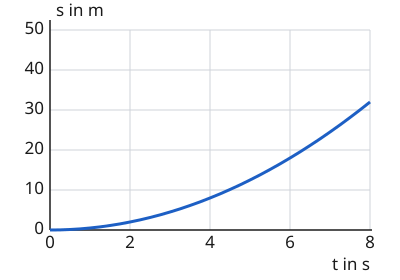

Kurven im Weg-Zeit-Diagramm
Mit einem KI-Tutor lernen
Ein KI-Tutor erklärt dir diese Seite und hilft dir bei den Übungen. Wähl deinen Assistenten:
Mit Claude öffnen Mit ChatGPT öffnen Mit Mistral Vibe öffnen
Du nutzt dein eigenes Konto beim Anbieter. Der Assistent ist kein Angebot von lernapps.net: lernapps liefert nur Inhalte und Übungen. Die Wahl gilt für alle Seiten, nur auf diesem Gerät.
Wenn der Graph nicht mehr gerade ist
Bisher war der Graph aus geraden Stücken. Das heißt: In jedem Stück war der Wagen gleichmäßig schnell. Was passiert mit dem Graphen, wenn der Wagen beim Anfahren immer schneller wird? Du weißt schon: Die Steigung zeigt die Geschwindigkeit. Dann muss sich die Steigung ändern.
Steiler oder flacher werden
Wird der Wagen schneller, kommt in jeder Sekunde mehr Weg dazu als in der Sekunde davor. Der Graph wird immer steiler. Wird der Wagen langsamer, kommt in jeder Sekunde weniger Weg dazu. Der Graph wird immer flacher. Der Graph ist dann eine Kurve. Die Kurve geht aber immer weiter nach oben, solange der Wagen noch fährt. Nur wenn er steht, ist der Graph waagerecht.
Forme die Kurve selbst
Das Diagramm ist aufgebaut wie auf der Seite zum Weg-Zeit-Diagramm. Aber die fünf Regler sind jetzt anders: Jeder legt die Geschwindigkeit zu einer bestimmten Zeit fest, bei 0, 2, 4, 6 und 8 Sekunden. Dazwischen ändert sich die Geschwindigkeit gleichmäßig. Zu Beginn stehen alle Regler auf 4 m/s, der Graph ist eine Gerade. Die Zahlen an den Achsen bleiben gleich, und Mit „Start“ läuft die Zeit und der Wagen fährt, mit dem Regler „Zeit“ stellst du eine Zeit selbst ein, und „Zurücksetzen“ stellt auch alle Geschwindigkeiten wieder auf 4 m/s.
Probiere aus: Stelle die Regler von links nach rechts auf immer größere Werte, zum Beispiel 0, 2, 4, 6, 8 m/s. Was macht der Graph? Stelle sie dann auf immer kleinere Werte, zum Beispiel 8, 6, 4, 2, 0 m/s. Wie sieht der Graph jetzt aus, und wie sieht er am Ende aus?
Bei 0,0 s: Weg 0 m, Geschwindigkeit 4 m/s
Ein Weg-Zeit-Diagramm eines Wagens. Waagerecht die Zeit von 0 bis 8 s, senkrecht der Weg von 0 bis 100 m. Fünf Regler legen die Geschwindigkeit bei 0, 2, 4, 6 und 8 s fest, dazwischen ändert sie sich gleichmäßig. Anfangs sind es überall 4 m/s, der Graph ist eine gerade Linie mit 8 m nach 2 s bis 32 m nach 8 s. Wählt man 0, 2, 4, 6 und 8 m/s, wird der Graph immer steiler: 2 m nach 2 s, 8 m nach 4 s, 18 m nach 6 s, 32 m nach 8 s. Wählt man 8, 6, 4, 2 und 0 m/s, wird er immer flacher und ist am Ende waagerecht: 14 m, 24 m, 30 m, 32 m.
Steiler heißt schneller
Ein Wagen fährt an

Der Graph eines Wagens, der anfährt.
Quelle: eigene Zeichnung. Lizenz: CC-BY-4.0.Von 0 bis 2 s kommen nur 2 m dazu, von 6 bis 8 s sind es 14 m. In der gleichen Zeit von 2 Sekunden schafft der Wagen am Ende also viel mehr Weg. Der Graph ist am Ende steiler, der Wagen ist schneller geworden: Er hat beschleunigt.
Übung
Übung
Lösung
Der Wagen wird schneller.
Bei einem schneller werdenden Wagen wird der Graph steiler. Hier wird er flacher.
Der Wagen wird langsamer und steht am Ende fast. richtige Antwort
Der Graph wird immer flacher, am Ende ist er fast waagerecht. Es kommt kaum noch Weg dazu.
Der Wagen fährt zurück.
Beim Zurückfahren würde der Graph nach unten gehen. Hier steigt er die ganze Zeit.
Der Wagen fährt gleichmäßig schnell.
Bei gleichmäßiger Fahrt ist der Graph eine Gerade mit gleich bleibender Steigung. Hier ändert sie sich.
Die Kurve wird immer flacher, also kommt in jeder Sekunde weniger Weg dazu. Der Wagen wird langsamer.
Mehr dazu:
Übung
Lösung
Richtige Antwort: Der Wagen wird immer schneller. – Der Graph wird immer steiler.; Der Wagen wird immer langsamer. – Der Graph wird immer flacher.; Der Wagen fährt gleichmäßig. – Der Graph ist eine schräge Gerade.; Der Wagen steht. – Der Graph ist waagerecht.
Die Steilheit des Graphen zeigt die Geschwindigkeit. Wächst sie, wird der Graph steiler, schrumpft sie, wird er flacher.
Mehr dazu: